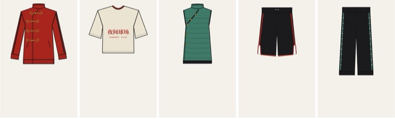
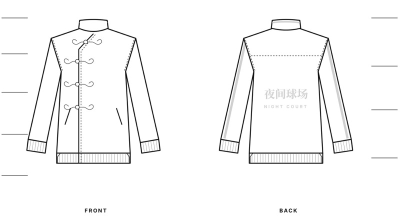
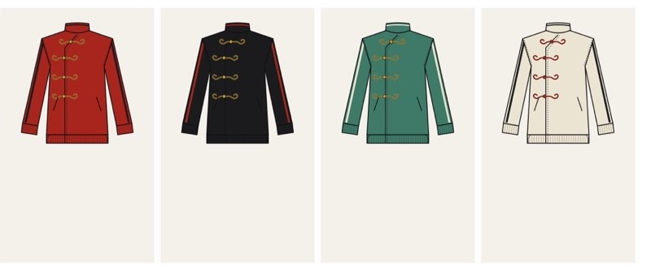

夜间球场Night Court
yèjiān qiúchǎngA unisex capsule for young Shanghai players who go from a late pickup game straight into the city. It mixes basketball warm-up wear with details from traditional Chinese dress: stand collars, offset fronts and pankou knot closures, reworked so they actually work as sportswear.

11pm, under the floodlights.
The hero jacket on court. Tricot that moves like warm-up wear, a stand collar and offset front from traditional dress, and gold pankou knots that actually close the jacket.
Why visualise it: seeing the piece on a real body in its real setting is the fastest way to test whether the story works before spending on a sample.

The court-to-city player, 18–25
Lives in Shanghai, plays pickup after class or work, then walks the city with friends. Wants one outfit that works on court and on the street. Proud of Chinese culture and wears it with confidence, not as costume. Buys into heritage sportswear, but wants it to feel local.
Their need: pieces that move like sportswear, look sharp at 11pm on the street, and say something about where they’re from.
- 01 · Heritage worn every day
- Young shoppers in China are wearing traditional details like stand collars and frog buttons in relaxed, everyday cuts. It has grown since around 2021 and now shows up on global runways too.
- 02 · The frog button went viral
- In 2026 a track jacket with pankou buttons became a global talking point. One video of it passed 9.5M views. A single cultural detail on a sport classic carried the whole product.
- 03 · City walk culture
- Gen Z treat walking the city as a social activity. Clothes need to go from activity to hanging out without a change.
OpportunityTake the pankou idea beyond one jacket and build a full court-to-city story around basketball warm-up wear.
Sources: China Daily, coverage of the viral pankou track jacket, 8 Apr 2026; Jing Daily, on the Gen Z city walk trend.
Court lights, old buttons, late streets.
The story starts at 11pm under floodlights and ends on a walk home through the city. Every piece keeps a basketball base (mesh, tricot, ribbing) and carries one clear Chinese detail that also does a job: a knot that closes, a slit that frees the stride, a cross-over that layers.
盘扣 · 立领 · 开衩 · 大襟Frog knot · stand collar · side slit · cross-over front
- Lacquer Red
#A8261E· hero colour, energy, celebration- Ink Black
#1C1C1E· night, court lines, base- Jade
#3F7A68· calm, heritage, secondary- Rice Paper
#ECE5D3· light, everyday, neutral- Gold Thread
#C49A3E· knots, trims, details only
| Material | Use | Why |
|---|---|---|
| Recycled poly tricot | Jacket, track pant | Classic track handle, soft sheen under lights |
| Recycled poly mesh | Shorts, jacket lining | Breathability on court |
| Heavyweight cotton jersey | Shooting shirt | Boxy drape, takes print well |
| Nylon ripstop + light padding | Quilted vest | Warmth for cold night walks, packs small |
| Cord knot + moulded toggle | Pankou closures | Hand-feel of a frog knot, sports-grade function |
Five pieces, one story

- Pankou Warm-Up Jacket
- Tricot · stand collar · offset zip + knot closures
- Cropped Shooting Shirt
- Heavy jersey · boxy crop · wide sleeve
- Cross-Over Quilt Vest
- Ripstop · cross-over (dajin) front · snaps
- Slit Court Short
- Mesh · curved side slits · contrast binding
- Snap Track Pant
- Tricot · side snaps · ribbed cuff
Pankou Warm-Up Jacket

- Stand collar
- Lined, contrast piping at top edge
- Pankou closures ×4
- Cord knot + moulded toggle over a hidden zip
- Offset placket
- Curves to wearer’s right like a traditional front
- Welt pockets
- Angled, zipped, bonded
- Side vents
- Split rib hem for movement on court
- Back yoke
- Seam for shape, mesh lining underneath
- Sleeve piping
- Contrast tape, dropped shoulder
- Back graphic
- 夜间球场 / NIGHT COURT, high-density print
Commercial thinking
Trade-offs I’d raise early: real knots cost more than a zip, so knots stay on the hero and vest only. Black carries volume; red is the launch story. One graphic family across shirt and jacket back keeps artwork costs down.
Next step: sample the hero jacket, test knot durability, and fit on both men’s and women’s bodies before confirming the size range.

| Piece | Role | Tier |
|---|---|---|
| Pankou Jacket | Hero, story carrier | Elevated |
| Quilt Vest | Layering, cold season | Elevated |
| Track Pant | Pairs with jacket | Core |
| Court Short | Volume, summer | Core |
| Shooting Shirt | Entry price, graphic | Entry |